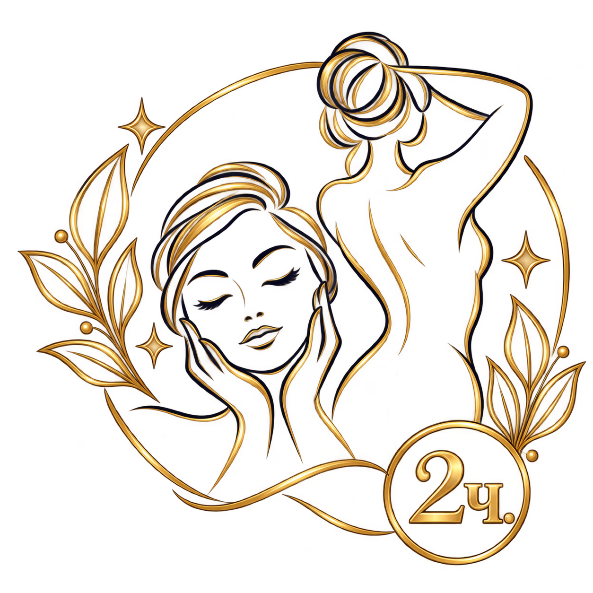
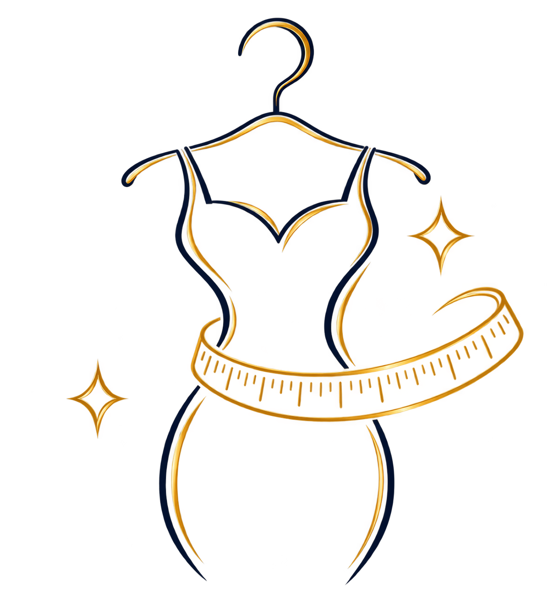

Комбо «Массаж 2 часа: тело + лицо»
Массаж тела и лица в одном визите — возможность замедлиться и уделить время себе целиком.

Массаж тела и лица в одном визите — возможность замедлиться и уделить время себе целиком.

Проработка выбранной зоны в сочетании с термо-обёртыванием.
Мягкое знакомство с массажем для тех, кто приходит к мастеру впервые.
Короткий формат знакомства с мастером. Можно выбрать популярную зону — шею и плечи или стопы.

Не планируйте на вечер слишком много — позвольте себе восстановить силы и немного замедлиться.

После сеанса выпейте стакан воды и в течение дня не забывайте поддерживать привычный питьевой режим.

Если массаж был интенсивным, отложите серьёзную физическую нагрузку. Неспешная прогулка или лёгкая разминка могут стать приятным продолжением дня.

Спокойный и полноценный сон поможет завершить день в том же расслабленном ритме.
Это нормально — не обязательно заранее разбираться во всех видах массажа. Перед сеансом можно рассказать мастеру, как вы себя чувствуете и чего хочется от посещения: расслабиться, уделить внимание определённым зонам или просто немного замедлиться. Вместе будет проще выбрать подходящий формат.
Всё начинается со знакомства и небольшой беседы. Вы сможете рассказать о своих пожеланиях и ощущениях, задать вопросы и обсудить формат сеанса. Затем можно спокойно устроиться и оставить повседневные дела за дверью — дальше начинается время для себя.
Ощущения во время массажа могут быть разными — всё зависит от выбранного формата и индивидуальной чувствительности. Главное, чтобы вам было комфортно: если что-то кажется слишком интенсивным, об этом всегда можно сказать мастеру.
Конечно. Ваши ощущения важнее заранее выбранного сценария. Во время сеанса можно попросить изменить интенсивность, уделить больше внимания определённой зоне или, наоборот, обойти её. Не нужно терпеть дискомфорт молча — мастер всегда может скорректировать формат работы.
Специальной подготовки не требуется. Достаточно прийти немного заранее, чтобы не спешить и спокойно настроиться на отдых. Если есть особенности самочувствия, о которых важно сообщить мастеру, лучше обсудить их перед началом сеанса.
Конечно. Не нужно специально освобождать целый день для массажа — можно заглянуть после работы и посвятить немного времени себе. После сеанса можно спокойно отправиться домой или продолжить вечер в более медленном ритме.
Массаж подходит не во всех ситуациях, поэтому перед сеансом важно учитывать своё самочувствие. При повышенной температуре, инфекционных заболеваниях, открытых повреждениях кожи или свежих травмах посещение лучше отложить.
Если вы сомневаетесь, подходит ли вам массаж сейчас, лучше заранее обсудить это с врачом и обязательно рассказать мастеру о важных особенностях своего состояния. Иногда достаточно перенести визит или подобрать другой формат.